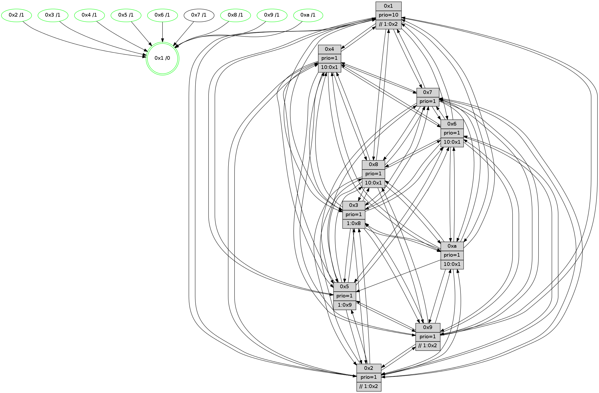

>> << IDX [start] -100 -25 -5 +0 +5 +25 +100 [735.006654024]
 Previous packets
----------------------------------------------------------------------
730.237880 beacon01(faad) #0 coord=01,02,03,04,05,06,07,0a,09,08 cycle=688.0ms assoc
-- color-indic=1 64 5b 36
730.247861 beacon02(faad) #0 coord=01,02,03,04,05,06,07,0a,09,08 cycle=688.0ms assoc 64 c8 07
730.257862 beacon03(faad) #0 coord=01,02,03,04,05,06,07,0a,09,08 cycle=688.0ms assoc 64 b2 4a
730.267862 beacon04(faad) #0 coord=01,02,03,04,05,06,07,0a,09,08 cycle=688.0ms assoc 64 c5 a0
730.277863 beacon05(faad) #0 coord=01,02,03,04,05,06,07,0a,09,08 cycle=688.0ms assoc 64 bf ed
730.287862 beacon06(faad) #0 coord=01,02,03,04,05,06,07,0a,09,08 cycle=688.0ms assoc 64 31 3a
730.297863 beacon07(faad) #0 coord=01,02,03,04,05,06,07,0a,09,08 cycle=688.0ms assoc 64 4b 77
730.307868 beacon0a(faad) #0 coord=01,02,03,04,05,06,07,0a,09,08 cycle=688.0ms assoc 64 3a 7c
730.317868 beacon09(faad) #0 coord=01,02,03,04,05,06,07,0a,09,08 cycle=688.0ms assoc 64 b4 ab
730.327869 beacon08(faad) #0 coord=01,02,03,04,05,06,07,0a,09,08 cycle=688.0ms assoc 64 ce e6
730.342045 [Hello(7): seq=468 sym=2,3,5,6,4,8,9,10,1 sysInfo=hasWarning stat=2:4,0,13,9/3:4,5,9,9/5:2,2,12,12/6:10,1,10,3/4:15,15,5,0/8:12,12,12,5/9:9,12,11,8/10:1,12,13,8/1:13,15,9,1]
730.350936 [Hello(1): seq=377 sym=4,2,9,5,10,3,8,6,7 sysInfo=coloring-mode-on,ColoringModeRequestCalled stat=4:9,4,7,0/2:5,2,13,9/9:7,10,7,0/5:5,15,8,1/10:14,2,13,8/3:10,1,4,11/8:13,2,1,7/6:9,0,0,7/7:9,5,4,8]
730.356005 [STC(1) #0.70 tree-change,inconsistent-stability,stable,to-color d=0]
----------------------------------------------------------------------
731.026010 beacon01(faad) #0 coord=01,02,03,04,05,06,07,0a,09,08 cycle=688.0ms assoc
-- color-indic=1 64 e7 33
731.035992 beacon02(faad) #0 coord=01,02,03,04,05,06,07,0a,09,08 cycle=688.0ms assoc 64 74 02
731.045994 beacon03(faad) #0 coord=01,02,03,04,05,06,07,0a,09,08 cycle=688.0ms assoc 64 0e 4f
731.055994 beacon04(faad) #0 coord=01,02,03,04,05,06,07,0a,09,08 cycle=688.0ms assoc 64 79 a5
731.065994 beacon05(faad) #0 coord=01,02,03,04,05,06,07,0a,09,08 cycle=688.0ms assoc 64 03 e8
731.075994 beacon06(faad) #0 coord=01,02,03,04,05,06,07,0a,09,08 cycle=688.0ms assoc 64 8d 3f
731.085993 beacon07(faad) #0 coord=01,02,03,04,05,06,07,0a,09,08 cycle=688.0ms assoc 64 f7 72
731.095998 beacon0a(faad) #0 coord=01,02,03,04,05,06,07,0a,09,08 cycle=688.0ms assoc 64 86 79
731.105998 beacon09(faad) #0 coord=01,02,03,04,05,06,07,0a,09,08 cycle=688.0ms assoc 64 08 ae
731.115998 beacon08(faad) #0 coord=01,02,03,04,05,06,07,0a,09,08 cycle=688.0ms assoc 64 72 e3
731.129157 [STC(7)->1 #0.70 tree-change,inconsistent-stability,to-color d=1]
731.130690 [STC(6)->1 #0.70 tree-change,inconsistent-stability,stable,to-color d=1]
731.132209 [STC(4)->1 #0.70 tree-change,inconsistent-stability,stable,to-color d=1]
731.133749 [Color(6) seq=122 @0:0 prio=1 >10.@1,1.@8,1.@9,1.@a]
731.135452 [Color(4) seq=98 @0:0 prio=1 >10.@1,1.@2,1.@3,1.@5]
731.137710 [Hello(8): seq=412 sym=5,2,3,4,7,6,9,10,1 sysInfo=hasWarning stat=5:5,0,9,8/2:15,6,0,2/3:11,8,5,9/4:3,4,7,6/7:14,5,9,6/6:9,9,5,8/9:13,6,9,5/10:10,0,9,6/1:1,8,12,0]
731.140929 [STC(3)->1 #0.70 tree-change,inconsistent-stability,stable,to-color d=1]
731.142959 [Hello(10): seq=401 sym=6,2,3,8,9,5,7,4,1 sysInfo=hasWarning stat=6:3,8,10,3/2:8,7,15,1/3:4,7,14,5/8:14,8,6,7/9:11,7,3,4/5:9,14,4,9/7:0,6,7,3/4:12,5,14,6/1:14,10,14,1]
731.145569 [Color(3) seq=120 @0:0 prio=1 >1.@8,1.@9,1.@a]
731.147125 [Hello(5): seq=469 sym=7,6,4,3,1,8,2 asym=9 sysInfo=hasWarning stat=7:14,5,10,4/6:12,4,9,7/4:9,12,0,5/3:13,12,1,6/1:14,6,11,1/8:10,7,1,5/2:9,6,3,0/9:3,13,2,0]
731.149960 [Hello(2): seq=465 sym=4,5,7,6,3,9,8,10,1 sysInfo=hasWarning stat=4:4,1,5,4/5:4,7,5,1/7:8,1,11,4/6:8,6,9,6/3:7,0,2,3/9:0,1,0,0/8:0,13,1,5/10:8,4,3,5/1:13,4,6,1]
731.152770 [STC(10)->1 #0.70 tree-change,inconsistent-stability,stable,to-color d=1]
731.154416 [Color(10) seq=100 @0:0 prio=1 >10.@1,1.@2,1.@3,1.@5]
731.158047 [STC(2)->1 #0.70 tree-change,inconsistent-stability,stable,to-color d=1]
731.160653 [Color(2) seq=114 @0:0 prio=1 >>1.@2,1.@3,1.@5]
731.162462 [STC(5)->1 #0.70 tree-change,inconsistent-stability,stable,to-color d=1]
731.164755 [Color(5) seq=122 @0:0 prio=1 >1.@9,1.@a]
731.166974 [STC(8)->1 #0.70 tree-change,inconsistent-stability,stable,to-color d=1]
731.170535 [Color(8) seq=135 @0:0 prio=1 >10.@1,1.@2,1.@3,1.@5]
731.175515 [Hello(9): seq=412 sym=2,5,3,4,7,6,8,10,1 sysInfo=hasWarning stat=2:0,1,0,0/5:0,1,0,0/3:9,15,2,8/4:13,8,4,5/7:0,10,11,4/6:10,13,7,6/8:14,13,13,3/10:11,7,8,8/1:12,2,14,1]
731.179937 [STC(9)->1 #0.70 tree-change,inconsistent-stability,stable,to-color d=1]
731.183807 [Color(9) seq=117 @0:0 prio=1 >>1.@2,1.@3,1.@5]
----------------------------------------------------------------------
731.814145 beacon01(faad) #0 coord=01,02,03,04,05,06,07,0a,09,08 cycle=688.0ms assoc
-- color-indic=1 64 23 3d
731.824126 beacon02(faad) #0 coord=01,02,03,04,05,06,07,0a,09,08 cycle=688.0ms assoc 64 b0 0c
731.834128 beacon03(faad) #0 coord=01,02,03,04,05,06,07,0a,09,08 cycle=688.0ms assoc 64 ca 41
731.844126 beacon04(faad) #0 coord=01,02,03,04,05,06,07,0a,09,08 cycle=688.0ms assoc 64 bd ab
731.854129 beacon05(faad) #0 coord=01,02,03,04,05,06,07,0a,09,08 cycle=688.0ms assoc 64 c7 e6
731.864129 beacon06(faad) #0 coord=01,02,03,04,05,06,07,0a,09,08 cycle=688.0ms assoc 64 49 31
731.874130 beacon07(faad) #0 coord=01,02,03,04,05,06,07,0a,09,08 cycle=688.0ms assoc 64 33 7c
731.884131 beacon0a(faad) #0 coord=01,02,03,04,05,06,07,0a,09,08 cycle=688.0ms assoc 64 42 77
731.894135 beacon09(faad) #0 coord=01,02,03,04,05,06,07,0a,09,08 cycle=688.0ms assoc 64 cc a0
731.904132 beacon08(faad) #0 coord=01,02,03,04,05,06,07,0a,09,08 cycle=688.0ms assoc 64 b6 ed
731.915625 [Hello(7): seq=469 sym=2,3,5,6,4,8,9,10,1 sysInfo=hasWarning stat=2:5,1,14,9/3:4,6,10,9/5:3,3,13,12/6:10,2,11,3/4:15,15,6,0/8:13,13,13,5/9:10,13,12,8/10:2,13,14,8/1:14,0,10,1]
731.918365 [Hello(6): seq=469 sym=2,3,5,4,7,9,8,10,1 sysInfo= stat=2:0,6,0,7/3:3,7,8,7/5:8,2,9,10/4:6,9,6,0/7:14,11,5,1/9:10,5,9,6/8:8,6,10,6/10:13,14,1,7/1:4,4,8,1]
731.921295 [Hello(1): seq=378 sym=4,2,9,5,10,3,8,6,7 sysInfo=coloring-mode-on,ColoringModeRequestCalled stat=4:9,4,7,0/2:6,3,14,9/9:8,11,8,0/5:6,0,9,1/10:15,3,14,8/3:10,2,5,11/8:14,3,2,7/6:9,0,0,7/7:9,5,5,8]
731.924886 [Hello(4): seq=469 sym=5,7,6,2,3,9,8,10,1 sysInfo= stat=5:14,5,8,8/7:1,10,9,2/6:8,13,11,8/2:2,8,5,8/3:12,15,1,5/9:12,0,6,3/8:1,1,9,8/10:10,0,11,7/1:5,15,11,1]
731.931752 [Hello(3): seq=469 sym=1,7,6,2,4,8,9,10,5 sysInfo= stat=1:13,5,11,1/7:14,9,6,2/6:1,12,1,8/2:5,13,7,8/4:12,4,5,5/8:13,12,7,3/9:1,6,12,6/10:6,15,9,6/5:13,12,7,7]
----------------------------------------------------------------------
732.602276 beacon01(faad) #0 coord=01,02,03,04,05,06,07,0a,09,08 cycle=688.0ms assoc
-- color-indic=1 64 9f 38
732.612259 beacon02(faad) #0 coord=01,02,03,04,05,06,07,0a,09,08 cycle=688.0ms assoc 64 0c 09
732.622258 beacon03(faad) #0 coord=01,02,03,04,05,06,07,0a,09,08 cycle=688.0ms assoc 64 76 44
732.632260 beacon04(faad) #0 coord=01,02,03,04,05,06,07,0a,09,08 cycle=688.0ms assoc 64 01 ae
732.642259 beacon05(faad) #0 coord=01,02,03,04,05,06,07,0a,09,08 cycle=688.0ms assoc 64 7b e3
732.652261 beacon06(faad) #0 coord=01,02,03,04,05,06,07,0a,09,08 cycle=688.0ms assoc 64 f5 34
732.662260 beacon07(faad) #0 coord=01,02,03,04,05,06,07,0a,09,08 cycle=688.0ms assoc 64 8f 79
732.672265 beacon0a(faad) #0 coord=01,02,03,04,05,06,07,0a,09,08 cycle=688.0ms assoc 64 fe 72
732.682264 beacon09(faad) #0 coord=01,02,03,04,05,06,07,0a,09,08 cycle=688.0ms assoc 64 70 a5
732.692264 beacon08(faad) #0 coord=01,02,03,04,05,06,07,0a,09,08 cycle=688.0ms assoc 64 0a e8
732.706366 [Color(4) seq=99 @0:0 prio=1 >10.@1,1.@2,1.@3,1.@5]
732.707972 [Color(3) seq=121 @0:0 prio=1 >1.@8,1.@9,1.@a]
732.709511 [Hello(9): seq=413 sym=2,5,3,4,7,6,10,1 sysInfo=hasWarning stat=2:0,1,0,0/5:0,1,0,0/3:10,15,2,8/4:14,8,4,5/7:1,10,12,4/6:11,13,8,6/10:11,7,8,8/1:13,2,14,1]
732.715701 [Color(6) seq=123 @0:0 prio=1 >10.@1,1.@8,1.@9,1.@a]
732.717736 [Color(1) seq=150 @0:0 prio=10 >>1.@2,1.@3,1.@5]
732.719508 [Color(5) seq=123 @0:0 prio=1 >1.@9,1.@a]
732.721747 [Hello(10): seq=402 sym=6,2,3,8,9,5,7,4,1 sysInfo=hasWarning stat=6:4,8,10,3/2:8,8,0,1/3:5,7,14,5/8:14,9,7,7/9:12,8,4,4/5:9,15,5,9/7:1,6,8,3/4:13,5,14,6/1:15,10,14,1]
732.726507 [Color(10) seq=101 @0:0 prio=1 >10.@1,1.@2,1.@3,1.@5]
732.731493 [Hello(8): seq=413 sym=5,2,3,4,7,6,9,10,1 sysInfo=hasWarning stat=5:5,0,9,8/2:15,6,0,2/3:12,8,5,9/4:4,4,7,6/7:15,5,10,6/6:10,9,6,8/9:14,7,10,5/10:10,0,9,6/1:2,8,12,0]
732.736233 [Color(8) seq=136 @0:0 prio=1 >10.@1,1.@2,1.@3,1.@5]
732.743735 [Color(2) seq=115 @0:0 prio=1 >>1.@2,1.@3,1.@5]
----------------------------------------------------------------------
733.390407 beacon01(faad) #0 coord=01,02,03,04,05,06,07,0a,09,08 cycle=688.0ms assoc
-- color-indic=1 64 ab 20
733.400390 beacon02(faad) #0 coord=01,02,03,04,05,06,07,0a,09,08 cycle=688.0ms assoc 64 38 11
733.410388 beacon03(faad) #0 coord=01,02,03,04,05,06,07,0a,09,08 cycle=688.0ms assoc 64 42 5c
733.420391 beacon04(faad) #0 coord=01,02,03,04,05,06,07,0a,09,08 cycle=688.0ms assoc 64 35 b6
733.430391 beacon05(faad) #0 coord=01,02,03,04,05,06,07,0a,09,08 cycle=688.0ms assoc 64 4f fb
733.440390 beacon06(faad) #0 coord=01,02,03,04,05,06,07,0a,09,08 cycle=688.0ms assoc 64 c1 2c
733.450391 beacon07(faad) #0 coord=01,02,03,04,05,06,07,0a,09,08 cycle=688.0ms assoc 64 bb 61
733.460394 beacon0a(faad) #0 coord=01,02,03,04,05,06,07,0a,09,08 cycle=688.0ms assoc 64 ca 6a
733.480397 beacon08(faad) #0 coord=01,02,03,04,05,06,07,0a,09,08 cycle=688.0ms assoc 64 3e f0
733.491617 [Hello(6): seq=470 sym=2,3,5,4,7,9,8,10,1 sysInfo= stat=2:0,7,0,7/3:4,7,8,7/5:8,3,9,10/4:7,9,6,0/7:14,11,5,1/9:10,5,9,6/8:9,7,10,6/10:14,15,1,7/1:5,5,8,1]
733.494937 [Hello(3): seq=470 sym=1,7,6,2,4,8,9,10,5 sysInfo= stat=1:13,6,11,1/7:14,9,6,2/6:1,13,1,8/2:6,14,7,8/4:12,4,5,5/8:14,13,7,3/9:2,6,12,6/10:7,0,9,6/5:13,13,7,7]
733.497425 [Hello(7): seq=470 sym=2,3,5,6,4,8,9,10,1 sysInfo=hasWarning stat=2:6,2,14,9/3:5,7,10,9/5:3,4,13,12/6:11,3,11,3/4:0,0,6,0/8:14,14,13,5/9:11,13,12,8/10:3,14,14,8/1:15,1,10,1]
733.501171 [Hello(4): seq=470 sym=5,7,6,2,3,9,8,10,1 sysInfo= stat=5:14,6,8,8/7:1,10,9,2/6:8,14,11,8/2:2,9,5,8/3:13,0,1,5/9:13,1,6,3/8:2,2,9,8/10:10,1,11,7/1:5,0,11,1]
733.506764 [Hello(1): seq=379 sym=4,2,9,5,10,3,8,6,7 sysInfo=coloring-mode-on,ColoringModeRequestCalled stat=4:10,4,7,0/2:6,4,14,9/9:8,11,8,0/5:6,1,9,1/10:0,4,14,8/3:11,2,5,11/8:15,4,2,7/6:9,0,0,7/7:9,5,5,8]
----------------------------------------------------------------------
734.178541 beacon01(faad) #0 coord=01,02,03,04,05,06,07,0a,09,08 cycle=688.0ms assoc
-- color-indic=1 64 17 25
734.188524 beacon02(faad) #0 coord=01,02,03,04,05,06,07,0a,09,08 cycle=688.0ms assoc 64 84 14
734.198524 beacon03(faad) #0 coord=01,02,03,04,05,06,07,0a,09,08 cycle=688.0ms assoc 64 fe 59
734.208526 beacon04(faad) #0 coord=01,02,03,04,05,06,07,0a,09,08 cycle=688.0ms assoc 64 89 b3
734.218523 beacon05(faad) #0 coord=01,02,03,04,05,06,07,0a,09,08 cycle=688.0ms assoc 64 f3 fe
734.228523 beacon06(faad) #0 coord=01,02,03,04,05,06,07,0a,09,08 cycle=688.0ms assoc 64 7d 29
734.238526 beacon07(faad) #0 coord=01,02,03,04,05,06,07,0a,09,08 cycle=688.0ms assoc 64 07 64
734.248532 beacon0a(faad) #0 coord=01,02,03,04,05,06,07,0a,09,08 cycle=688.0ms assoc 64 76 6f
734.258530 beacon09(faad) #0 coord=01,02,03,04,05,06,07,0a,09,08 cycle=688.0ms assoc 64 f8 b8
734.268529 beacon08(faad) #0 coord=01,02,03,04,05,06,07,0a,09,08 cycle=688.0ms assoc 64 82 f5
734.282931 [Color(4) seq=100 @0:0 prio=1 >10.@1,1.@2,1.@3,1.@5]
734.284718 [Hello(8): seq=414 sym=5,2,3,4,7,6,9,10,1 sysInfo=hasWarning stat=5:5,0,9,8/2:15,7,0,2/3:13,8,5,9/4:5,5,7,6/7:0,5,10,6/6:11,9,6,8/9:14,7,10,5/10:10,0,9,6/1:3,8,12,0]
734.287484 [Hello(5): seq=471 sym=7,6,4,3,1,9,8,2 sysInfo=hasWarning stat=7:0,5,11,4/6:14,4,10,7/4:11,13,0,5/3:15,12,1,6/1:0,6,11,1/9:4,14,3,0/8:11,9,2,5/2:9,7,3,0]
734.290689 [Hello(2): seq=467 sym=4,5,7,6,3,9,8,10,1 sysInfo=hasWarning stat=4:6,2,5,4/5:4,8,6,1/7:10,1,12,4/6:10,6,10,6/3:9,0,2,3/9:1,2,1,0/8:0,14,2,5/10:8,4,3,5/1:15,4,6,1]
734.293333 [Color(5) seq=124 @0:0 prio=1 >1.@9,1.@a]
734.294808 [Color(2) seq=116 @0:0 prio=1 >>1.@2,1.@3,1.@5]
734.298126 [STC(1) #0.71 tree-change,inconsistent-stability,stable,to-color d=0]
734.299792 [Color(8) seq=137 @0:0 prio=1 >10.@1,1.@2,1.@3,1.@5]
734.301824 [Color(1) seq=151 @0:0 prio=10 >>1.@2,1.@3,1.@5]
734.303575 [Hello(10): seq=403 sym=6,2,3,8,9,5,7,4,1 sysInfo=hasWarning stat=6:5,8,10,3/2:8,9,0,1/3:6,7,14,5/8:15,10,7,7/9:12,8,4,4/5:9,15,5,9/7:2,6,8,3/4:14,6,14,6/1:0,10,14,1]
734.306035 [Color(6) seq=124 @0:0 prio=1 >10.@1,1.@8,1.@9,1.@a]
734.307742 [Hello(9): seq=414 sym=2,5,3,4,7,6,8,10,1 sysInfo=hasWarning stat=2:0,2,0,0/5:0,1,0,0/3:11,15,2,8/4:15,9,4,5/7:2,10,12,4/6:12,13,8,6/8:0,1,0,0/10:11,8,8,8/1:14,2,14,1]
734.311870 [Color(10) seq=102 @0:0 prio=1 >10.@1,1.@2,1.@3,1.@5]
734.313568 [Color(9) seq=119 @0:0 prio=1 >>1.@2,1.@3,1.@5]
734.319663 [Color(3) seq=122 @0:0 prio=1 >1.@8,1.@9,1.@a]
----------------------------------------------------------------------
734.966672 beacon01(faad) #0 coord=01,02,03,04,05,06,07,0a,09,08 cycle=688.0ms assoc
-- color-indic=1 64 d3 2b
734.976656 beacon02(faad) #0 coord=01,02,03,04,05,06,07,0a,09,08 cycle=688.0ms assoc 64 40 1a
734.986655 beacon03(faad) #0 coord=01,02,03,04,05,06,07,0a,09,08 cycle=688.0ms assoc 64 3a 57
734.996653 beacon04(faad) #0 coord=01,02,03,04,05,06,07,0a,09,08 cycle=688.0ms assoc 64 4d bd